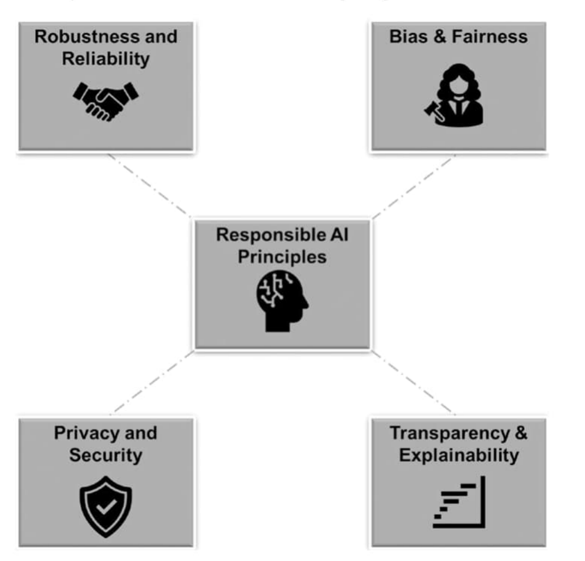

Unit 1 — Introduction to AI & Ethics, and Core Ethical Principles
Strong & weak AI • Descriptive / Normative / Meta ethics • Ethics & law • Machine ethics • Moral diversity & testing • Bias & fairness, transparency & explainability, privacy & security, robustness & reliability
Contents
What is AI? (definitions, ML, robots)
Strong vs weak AI & types of AI systems
Types of ethics
Relationship between ethics and law
Machine ethics & examples
Moral diversity and testing
Why responsible AI & the core principles
Bias and fairness
Transparency and explainability
Privacy and security
Robustness and reliability
Quick revision & likely questions
Sources: Ethical AI (Bartneck, Lütge, Wagner, Welsh, Springer 2021) — Ch. 2 What Is AI? and Ch. 3 What Is Ethics?; Introduction to Responsible AI (Manure, Bengani, Saravanan, Apress 2023) — Ch. 1 Introduction (core ethical principles).
1. What is AI?
Who
Definition
Kaplan & Haenlein
A system's ability to correctly interpret external data, learn from it, and use that learning to achieve goals through flexible adaptation.
Poole & Mackworth
Study of computational agents that act intelligently: actions fit circumstances & goals, flexible, learn from experience, choose well under limits.
Russell & Norvig
Study of agents that receive percepts and take actions — each agent is a function mapping percepts → actions.
Four schools (Russell & Norvig): machines that think like humans, act like humans, think rationally, act rationally.
Common core: designing intelligent agents that achieve goals. AI is a moving target — "AI is whatever computers can't do yet".
Autonomy is context-dependent (Greek auto-nomos, "self-rule"): engineering → works without an operator; bioethics → patient's right to decide; Kantian ethics → choosing one's own moral rules.
Figure 2.1 — Siri: "I can't answer that, Chris." (Should I lie about my weight on my dating profile?)
Why this "simple" question is hardNeeds speech recognition → language understanding (homophone lie) → world knowledge (dating, honesty) → a moral stance: consequentialist (maximise everyone's happiness), deontological (lying violates duty, Kant), virtue (be honest, Aristotle) — plus business risk for Apple.
1.1 Machine learning
Type
Idea
Example
Supervised
Learn from labelled data (classification/regression) → produces a classifier. Evaluated by true-positive and false-positive rate on a separate test set.
Spam filter
Unsupervised
Find structure without labels (clustering, PCA); exploratory.
Customer segments
Reinforcement
Learn a policy (action → expected reward) from a reward signal.
Robot navigating to a goal
Ethics linkSupervised labels are assigned by humans, so societal bias can be baked into the classifier — the thread that leads into Unit 2.
1.2 Robots & why AI is hard
Robot = AI that is situated (real world) and embodied (physical body). Works by Sense → Plan → Act; an error at one step propagates to the next.
System integration (sensors/actuators with different failure modes) is one of the hardest parts.
Hard for AI: limited sensing; poor generalisation (face recogniser fails on a profile view); no common sense / common ground; no innate knowledge (a robot is a "blank slate"); repeated hype cycles.
Science vs fiction: HAL, Terminator, Westworld inflate expectations (the "Frankenstein complex"). Sophia (Saudi "citizenship", 2017) is scripted PR — no learning, no adaptation.
2. Strong vs Weak AI & Types of AI Systems
Turing Test (1950)If a human interviewer cannot tell a machine from a person in conversation, the machine is judged intelligent. Replaces the vague word "thinking" with a testable task. Criticism: no time limit specified; passing is not clearly necessary/sufficient for intelligence.
Weak (narrow) AI
Strong AI (Searle, 1980)
Scope
One narrowly defined task
General intelligence across many problems
Claim
Simulates intelligent behaviour
A suitably programmed computer has a mind like humans
Status
All current AI (chess/Go engines, loan scoring, Siri)
Not yet achieved
Types of AI systems:Expert systems (rule-based; e.g. mortgage advisors) • Planning systems (e.g. SPIKE for the Hubble telescope) • Computer vision (object recognition) • Machine learning.
3. Types of Ethics
Ethics = theory of morality (principles, general norms); morality = the actual rules, values and norms guiding action. Kant: ethics asks "What should I do?" (Greek ethos = custom; Cicero's mores → "moral").
Taxonomy of ethics (Ch. 3)
Branch
Question
Key points
Descriptive
What do people actually believe and do?
Empirical — moral psychology, experimental economics. E.g. the ultimatum game: people give up profit for fairness. Gives input to normative ethics ("experimental ethics").
Normative
What ought to be done?
Prescriptive; claims general validity ("stealing is wrong for everybody"). Three theories below.
Meta-ethics
What is morality itself?
Ontology (what has moral worth), semantics (meaning of right/wrong/ought), epistemology (how moral truths are known). "Theory of ethics".
Applied
Ethics in concrete fields
Medicine, biotech, business. Influence runs both ways: practice shapes theory (solidarity means sharing in a family, fair competition in society).
3.1 The three normative theories
Theory
Judges an action by
Detail
CSR example
Deontological (duty ethics)
The action itself — intention, duty, rule
Kant's categorical imperative: act only on a maxim you can will as a universal law without contradiction.
Critics ask about the company's motive (PR vs genuine)
Motive irrelevant; only the impact on society counts
Virtue ethics
The agent's character
Plato's cardinal virtues (wisdom, justice, fortitude, temperance); Aristotle extends to 11 moral + intellectual virtues.
Is the firm acting honestly and justly?
4. Relationship Between Ethics and Law
Popular view: "ethics starts where the law ends" — the book challenges it:
Laws have an ethical side — anti-pollution and anti-trust laws are also ethical norms.
Ethics works as "soft law" — firms follow ethical standards the law doesn't demand, to protect reputation and share price (e.g. fair-trade coffee as a selling point); the effect is almost like hard law.
RememberLaw = enforceable minimum; ethics = broader, often precedes and shapes law (e.g. hate-speech laws on social media). They overlap but are not opposites.
5. Machine Ethics
Machine ethicsAsks: what would it take to build an ethical AI that makes moral decisions? Machines lack phenomenology (feelings, consciousness) and moral intuition — they only process data about feelings. Critics (van Wynsberghe & Robbins) say roboticists haven't given strong reasons to build moral robots.
Figure 3.3 — Sophia: lifelike, but no feelings or consciousness
Sensors → Symbol grounding → Moral cognition (logic) → Action
Symbol grounding = converting raw sensor data into symbols (objects, events, properties, relations).
Logic = truth-preserving inference (Socrates is a man; all men are mortal ⇒ Socrates is mortal).
5.1 Machine ethics examples
Easy case — speeding-ticket robotRule: if driver X is speeding then the robot is obligated to issue a ticket to X. Fact: X is speeding ⇒ issue ticket. Clear rule + clear symbols = easy.
Hard case — toddler vs letterA robot on its way to post a letter sees a toddler fall into a 1 m stream. Two duties clash: rescue vs post. The robot has no empathy or sense of urgency, so it needs causal understanding and a utility scale: toddler = +1,000,000, on-time letter = +1 ⇒ rescue.
When naive utilitarian arithmetic failsNow the robot drives a truck with 1,000,001 letters (+1 each) ⇒ 1,000,001 > 1,000,000 ⇒ it lets the toddler drown. Simple utility sums give counter-intuitive results; implementing deontology needs a principled way to resolve clashes of duties.
6. Moral Diversity and Testing
Core problem:no agreement on the correct moral theory — how do we implement moral competence in AIs and robots if we have no moral theory to inform the design?
Approach — test cases: design many ethical test cases; moral competence = ability to pass them. Iterating on new cases may expand competence and give insight into theory.
Testing & certifying fairness (active research): IEEE standards project on algorithmic bias (2017); AI Fairness 360, audit-AI; services like O'Neil Risk Consulting & Algorithmic Auditing; Facebook's Fairness Flow.
Also: codes of ethics for robotics engineers and HRI professionals. Some researchers remain pessimistic about machine morality.
7. Why Responsible AI & the Core Ethical Principles
(Manure et al., Ch. 1) AI promises large gains (autonomous vehicles, precision agriculture, personalised learning, NLP, diagnostics) but its power to make decisions, learn and act autonomously creates an ethical dilemma. Responsible AI is the guiding framework for AI's development, deployment and governance: aligning innovation with societal values through ethical principles, accountability and transparency across the AI lifecycle.
Why it matters
Explanation
Mitigating bias & discrimination
Models trained on biased data reproduce prejudice; responsible AI demands rigorous data preprocessing, algorithmic transparency and a pursuit of fairness.
Privacy vs innovation
AI's appetite for data threatens individual privacy; needs strong encryption, secure storage and access control so people keep agency over their data.
Human-centric design
AI should augment humans, not replace them; keep human oversight and develop explainable AI so decisions are comprehensible and traceable.
Governance
Robust frameworks, codes of conduct and regulation across legal, social and cultural boundaries; averts harm and ensures AI serves the collective good.

Figure 1-1 — The four core principles of Responsible AI (Manure et al.)
Bias & fairnessBias seeps into AI through the data used to train it — algorithms learn patterns from vast datasets that already contain biases of human decisions and social structures → discriminatory outcomes, stereotypes, widened disparities. Fairness = treating all individuals equitably regardless of background, demographics or characteristics.
Eliminating all bias may be infeasible — the focus is on mitigating glaring biases that lead to unjust or harmful outcomes.
Fairness is an ethical imperative (a "north star"): goes beyond statistical definitions to moral and societal obligations, redressing historical and systemic inequalities.
Algorithmic fairness: decisions must not depend on sensitive attributes (race, gender, socioeconomic status); fairness metrics, algorithms and techniques exist to assess and rectify bias.
Challenge — quantifying fairness: no universally accepted definition; competing notions (equal treatment vs redressing historical disparities); trade-offs between fairness types and with accuracy.
Mitigation path: awareness & education; data preprocessing (re-sampling, re-weighting); adversarial debiasing; diversity in data collection, model development and evaluation.
Societal impact: biased AI perpetuates inequality and erodes trust in technology — organisations should adopt AI-ethics frameworks across the development lifecycle.
Continued in Unit 2Types of bias, real cases, detection & mitigation techniques and a Python implementation.
9. Transparency and Explainability
Meaning
Transparency
Openness and comprehensibility of an AI system's decision-making — illuminates the "black box" (how inputs become outputs). Fosters accountability, lets people identify and challenge errors or unintended consequences, and builds trust.
Explainability
Bridges the cognitive gap between complex non-linear AI processing and human cognition — answers "Why did it make this decision?" and "How did it arrive at this conclusion?" by turning outputs into explanations people can follow.
Applications:finance (loan decisions), health care (diagnoses, treatment recommendations), criminal justice (stops predictive models perpetuating racial/socioeconomic bias). Also supports auditing and regulatory compliance.
Challenges: (1) trade-off between model complexity and interpretability (deep nets are hard to explain); (2) dynamic models that update/adapt need explanations that stay meaningful through the lifecycle; (3) proprietary concerns — balancing transparency with intellectual property and the public's right to transparency.
10. Privacy and Security
Privacy is a cornerstone of personal freedom; AI accumulates and analyses huge amounts of data, so personal information must be handled with the highest level of consideration. Informed consent: people have the right to know how their data is used and shared.
Data minimisation: collect, process and retain only the data essential for a specific AI task — lowers the risk of unintended exposure and breaches.
Data security: protect data from unauthorised access, manipulation or theft — encryption, access controls, secure storage, with protection built into every stage from collection to disposal.
Challenges: (a) AI needs vast data, so sophisticated anonymisation must keep individuals' privacy intact in aggregated data; (b) global dataflows need harmonised privacy/security regulation and international standards.
Solutions:privacy-preserving AI — federated learning (learn from decentralised data) and homomorphic encryption (compute on encrypted data).
Privacy and security are "inseparable twins": strong protection builds trust and prevents misuse of AI for surveillance.
11. Robustness and Reliability
Meaning
Robustness
Capacity of algorithms to stay effective and accurate amid complexity, uncertainty and adversarial scenarios — generalise to novel situations, data variations or deliberate attempts to deceive. E.g. a self-driving car must cope with weather, road layouts and unexpected obstacles; a diagnostic model must stay accurate across diverse patients.
Reliability
Consistent delivery of accurate outcomes over time, including under continuous operation. A foundation of trust: unreliable finance models cause large losses; unreliable diagnostic AI endangers patients.
Challenges & mitigation strategies
Data quality & diversity — representative, unbiased sampling and continuous data monitoring.
Adversarial attacks — robust/adversarial training and constant evaluation against subtly altered inputs.
Transfer learning & generalisation — adapt to new contexts without extensive retraining.
Model monitoring & feedback loops — observe real-world performance and improve over time.
Interpretable AI and collaborative ecosystems (researchers, developers, policymakers, domain experts).
12. Quick Revision & Likely Questions
One-liners
AI = agents that perceive, learn and act towards goals; today's AI is all weak. Strong AI (Searle) = a machine with a mind; not achieved.